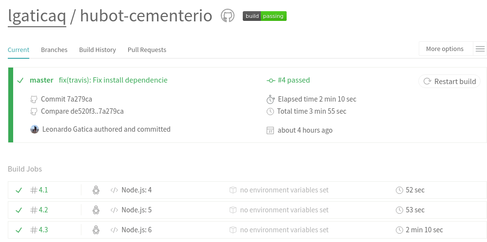
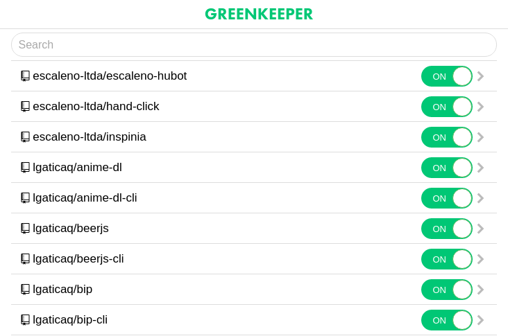
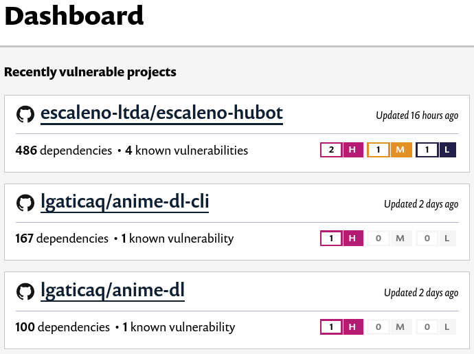
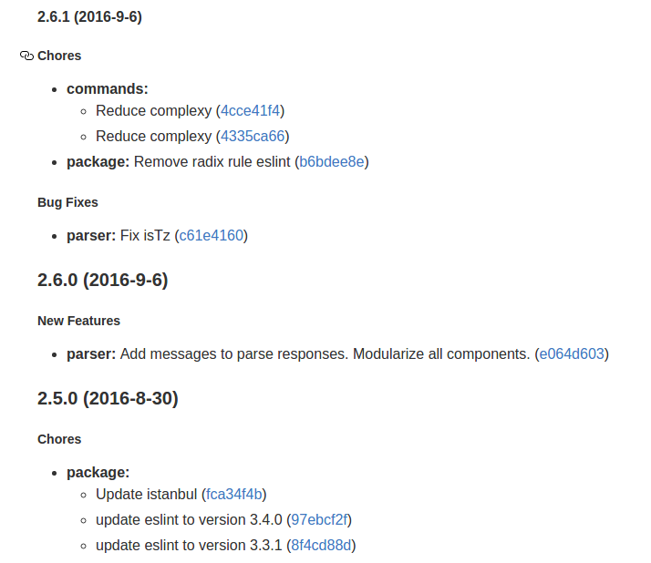

Buenas practicas en el desarrollo con node
node --inspector (node >=6.3)
node --inspector src
Debugger listening on port 9229.
Warning: This is an experimental feature and could change at any time.
To start debugging, open the following URL in Chrome:
chrome-devtools://devtools/remote/serve_file/
@521e5b7e2b7cc66b4006a8a54cb9c4e57494a5ef/
inspector.html?experiments=true&v8only=true&ws=localhost:9229/node
info: Express app started on port 3000Nodemon + inspector
npm i -D nodemon./node_modules/.bin/nodemon -- --inspect src
editorconfig
root = true
[*]
indent_style = space
indent_size = 2
end_of_line = lf
charset = utf-8
trim_trailing_whitespace = true
insert_final_newline = true
[*.md]
trim_trailing_whitespace = falseeslint (linter)
npm i -D eslint
./node_modules/.bin/eslint --init
./node_modules/.bin/eslint --fix.eslintignore
coverage
example.jseslintConfig (package.json)
"eslintConfig": {
"env": {
"es6": true,
"node": true,
"mocha": true
},
"extends": "eslint:recommended",
"rules": {
"indent": [2, 2],
"linebreak-style": [2, "unix"],
"quotes": [2, "single"],
"semi": [2, "always"]
}
}Sublime Text + Package Control
Package Control: Advanced install PackageEditorConfig SublimeLinter SublimeLinter-contrib-eslinttest + travis (CI)
npm i -D mocha chailanguage: node_js
node_js:
- "4"
- "5"
- "6"
notifications:
email: false
after_success:
- npm run coveralls
- npm run codeclimate
coveralls y codeclimate (coverage)
npm i -D istanbul coveralls codeclimate-test-reporter./node_modules/.bin/istanbul cover _mocha
./node_modules/.bin/coveralls < coverage/lcov.info
./node_modules/.bin/codeclimate-test-reporter < coverage/lcov.info

Greenkeeper
npm i -g greenkeeper
greenkeeper login
greenkeeper web-app

Snyk.io

Semantic Commit
commit -m "chore(package): Actualizado moment"
commit -m "feat(models): Se agrego metodo para filtrar por empresa"
commit -m "fix(login): Se corrigio asignacion de permisos"
commit -m "docs(api): Se documento recurso de usuarios"
commit -m "refactor: share logic between 4d3d3d3 and flarhgunnstow"
commit -m "style: convert tabs to spaces"
commit -m "test: ensure Tayne retains clothing"generate-changelog
npm i -D generate-changelog./node_modules/.bin/changelog -M # Major
./node_modules/.bin/changelog -m # Minor
./node_modules/.bin/changelog -p # PatchCHANGELOG.md

docker-compose.yml
version: '2'
services:
app:
build: .
ports:
- "3000:80"
- "9229:9229"
environment:
MONGODB_URI: mongodb://mongo/myapp
volumes:
- .:/opt/app
- node_modules:/opt/app/node_modules
depends_on:
- mongo
networks:
- app
mongo:
image: mvertes/alpine-mongo
volumes:
- mongo:/data/db
networks:
- app
volumes:
mongo:
node_modules:
networks:
app:docker-compose exec mongo sh
apk add --no-cache mongodb-tools
mongodump -u user -p pass -h host:port -d dbname -o /tmp/
mongorestore -d visto-bueno /tmp/dbname
apk del mongodb-tools
rm -rf /tmp/dbname
exitdocker-compose exec app npm t